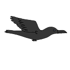
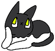
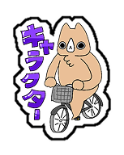
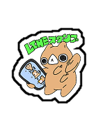
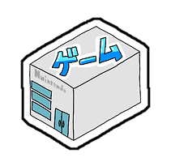
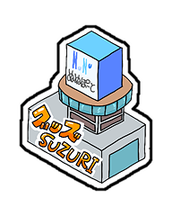
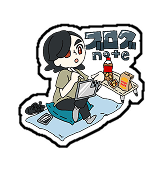
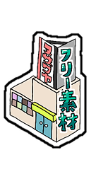

official home
ここは、えりぬいの公式HPです。かんこう気分でいっぱい楽しんでいってね！
気になる場所をタップして、ゲームやSNS、ブログ、グッズの入口へどうぞ。








GAME
犬タローを操作して虫さんを捕まえるブラウザゲームを公開中です。
BLOG
制作メモや更新情報はnoteにもまとめていきます。
YOUTUBE
マップ内のYouTube看板に、最新サムネイルを表示する想定です。
ゲームにも登場する、えりぬいシティの元気な案内役です。
まちの道をちょこちょこ歩くネズミのキャラクターです。
気になることがあると、頭の上に「？」が浮かぶ猫のキャラクターです。